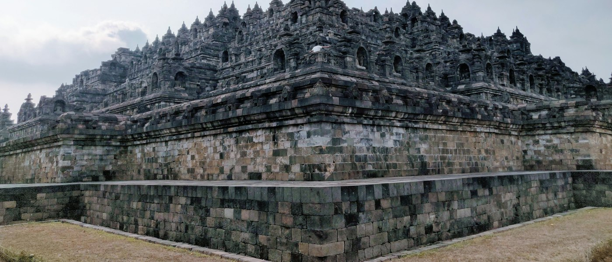
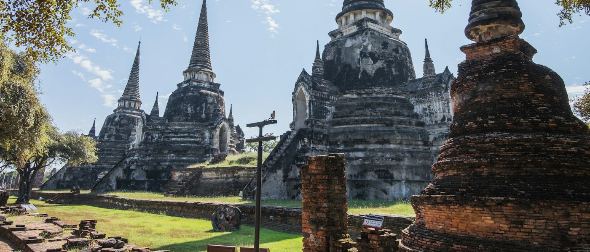

Borobudur Temple | Indonesia
One of the largest Buddhist temples in the world, Borobudur Temple in Indonesia is an impressive archaeological site for many reasons. This sprawling temple complex dates back to the 8th and 9th century and displays exquisite architecture that includes five square terraces and three circular platforms. This historic monument is also a famous pilgrimage site for the Buddhists and is visited by a large number of monks and travelers from across the world. ...
Angkor Wat | Cambodia
Built by Suryavarman II, Angkor Wat is the iconic surviving temple dedicated to Lord Shiva, Vishnu and Brahma. This historic site is also featured on the national flag of Cambodia. This temple complex dates back to the 12th century and has many fascinating stories that mystifies historians and travelers alike. Perched atop a mountain, this expansive temple complex is dotted with thousands of monuments that are adorned with exquisite sculptures of Hindu gods, scenes drawn from Indian epics and sights of Khmer. Angkor Wat is one of the cultural wonders of the world and therefore must be on your wish list. ...
AYUTTHAYA
Ayutthaya full name Phra Nakhon Si Ayutthaya is an ancient capital and modern city in the Central
Plains of Thailand, 85 km (53 mi) north of Bangkok.
It was capital of the Kingdom of Siam, and a prosperous international trading port, from 1350 until
razed by the Burmese in 1767. The ruins of the old city now form the Ayutthaya Historical Park, an
archaeological site that contains palaces, Buddhist temples, monasteries and statues. The park is on
an island between 3 rivers.
Once an important center of global diplomacy and commerce, Ayutthaya is now an archaeological ruin,
characterized by the remains of tall prang (reliquary towers) and Buddhist monasteries of monumental
proportions, which give an idea of the city's past size and the splendor of its architecture.
...
LUANG PHABANG
Luang Prabang, the ancient capital of Luang Prabang Province in northern Laos, lies in a valley at
the confluence of the Mekong and Nam Khan rivers. Inhabited for thousands of years, it was the royal
capital of the country until 1975. It’s known for its many Buddhist temples, including the gilded
Wat Xieng Thong, dating to the 16th century, and Wat Mai, once the residence of the head of Laotian
Buddhism.
Luang Phabang consisting of 58 adjacent villages, of which 33 comprise the UNESCO Town of Luang
Prabang World Heritage Site. It was listed in 1995 for unique and "remarkably" well preserved
architectural, religious and cultural heritage, a blend of the rural and urban developments over
several centuries, including the French colonial influences during the 19th and 20th centuries.
...